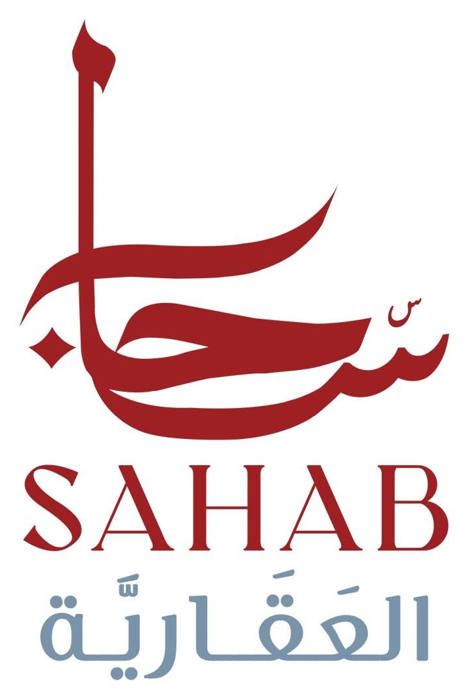

رسائل العملاء تصل للموظف المناسب في ثوانٍ
محرك الواتساب الموحّد لرقم الشركة: استقبال، تأهيل، توزيع عادل على الأقسام، ومتابعة من التطبيق والداشبورد.
- الخادمجارٍ الفحص…
- قاعدة البياناتجارٍ الفحص…
- وضع الإرسال…
آخر فحص: —

محرك الواتساب الموحّد لرقم الشركة: استقبال، تأهيل، توزيع عادل على الأقسام، ومتابعة من التطبيق والداشبورد.
آخر فحص: —